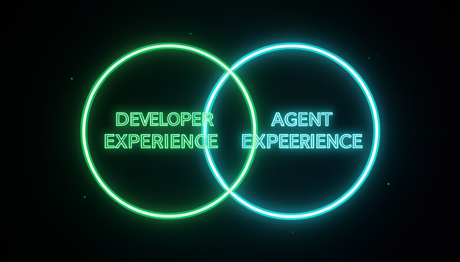

📖 Glossário vivo (leia antes — volte sempre que precisar)
Estes são os termos NOVOS deste módulo. O vocabulário base (modelo, prompt, agente, skill, codebase, harness) já foi definido no módulo 1.1 — aqui a gente só usa. Fixe estes:
🤖 O que é Agent Experience
🧠 Imagine assim: um funcionário novo chega na sua empresa. Se a mesa está organizada, há um manual na gaveta e cada coisa tem etiqueta, ele produz no primeiro dia. Se é uma bagunça sem mapa, ele passa a semana perdido. O agente é esse funcionário novo — e o codebase é a empresa que o recebe.
Você já conhece DX (Developer Experience): tudo que torna o projeto agradável para um humano programar — nomes claros, scripts prontos, mensagens de erro legíveis. Matt Pocock introduz o irmão dele: AX, de Agent Experience — literalmente, "a experiência que o agente tem no codebase". É a mesma pergunta, só que feita do ponto de vista da IA: quando o agente entra no seu projeto, ele se acha? Entende o que faz o quê? Consegue mudar sem quebrar três outras coisas?
Por que isso importa, e por que agora? Porque o agente passou a ser um "colaborador" que trabalha no seu codebase de verdade: ele lê arquivos, roda comandos, edita código. Se o codebase é um labirinto, o agente se perde igual a um humano — só que ele "se perde" gastando tokens, tentando, errando, relendo. Boa AX não é um detalhe estético: é o que faz o agente acertar na primeira e custar barato. O erro comum aqui é tratar AX como "coisa de IA, separada do meu trabalho de dev" — quando, como veremos, é quase o mesmo trabalho.
Humano e agente entram no mesmo codebase e fazem as mesmas perguntas. AX = essa experiência, vista pelo lado da IA.
⚠️ Erro comum de iniciante
Achar que "melhorar o AX" é comprar um modelo melhor. Não — AX é sobre o ambiente que você dá ao agente. Um modelo top num codebase caótico ainda se atrapalha; um modelo modesto num codebase limpo voa.
Em 1 frase: AX é a experiência que o agente tem no seu codebase — trate a IA como um funcionário novo que precisa se achar.
Indo mais fundo (opcional): por que "experiência", e não só "código limpo"?
"Experiência" é maior que "código bonito". Inclui o processo de trabalhar ali: quanto tempo até achar o arquivo certo, se o erro avisa cedo ou tarde, se há um caminho óbvio. Por isso AX (assim como DX) mede a jornada inteira do trabalho — não só o resultado final estático.
🔵 O overlap DX/AX
🧠 Imagine assim: uma rampa de acessibilidade na entrada de um prédio. Foi feita pensando em cadeira de rodas — mas quem empurra um carrinho, carrega mala ou tem o joelho ruim também ganha. Você não precisou de duas obras: uma só serviu pra todo mundo. DX e AX são assim.
Aqui está o coração do módulo, e a frase exata de Pocock: "Huge overlap between good DX and good AX" — há uma sobreposição enorme entre boa experiência de dev e boa experiência de agente. Por quê? Porque as duas batem nos mesmos obstáculos. Um nome de variável confuso confunde o humano e o agente. Um teste que falha cedo protege os dois. Uma pasta organizada deixa os dois acharem o que precisam. Não são dois trabalhos separados — é quase o mesmo trabalho rendendo duas vezes.
Pocock lista o que melhora o resultado da IA: melhores skills, um modelo mais forte, melhor harness — e melhorar o codebase, que ele chama de "o mais frequentemente esquecido". E remata: "um sênior bom sabe construir DX que vira AX". Ou seja: as habilidades que tornam você um bom engenheiro para humanos são exatamente as que tornam seu codebase bom para agentes. O erro comum é imaginar que IA exige um conjunto de práticas exótico e novo; quase sempre, é caprichar no básico que você já deveria fazer. Atenção a um detalhe honesto: o overlap é enorme, não 100% — há ajustes só-pra-agente (ex.: um arquivo de instruções que o agente lê), mas a base é compartilhada.

Recuperação rápida: por que cuidar do DX já melhora o AX?
Em 1 frase: há overlap enorme entre DX e AX — caprichar no básico para humanos já entrega um codebase bom para agentes.
🛡️ Guard rails e navegabilidade
🧠 Imagine assim: uma estrada na montanha. As grades de proteção (guard rails) não deixam o carro cair no abismo se ele sair da pista; e as placas dizem onde virar. Você dirige rápido e confiante porque sabe que, se errar, é avisado na hora — não três curvas depois.
Duas alavancas concretas de AX. A primeira são os guard rails (grades de proteção): tipos, testes automatizados, linter, validações. Eles transformam um erro silencioso (que só aparece três passos depois) num erro ruidoso e imediato. Pocock liga isso direto a custo: com guard rails, o modelo erra menos e gasta "fewer tokens banging its head against the wall" — menos tokens batendo a cabeça na parede. Sem eles, a IA tenta, quebra algo longe, descobre tarde, e refaz tudo — caro e lento.
A segunda alavanca é a navegabilidade: o agente precisa achar as coisas. Pastas com nomes que dizem o que contêm, arquivos no lugar previsível, módulos com fronteiras claras. Um codebase navegável é um mapa; um bagunçado é um labirinto. E note: as duas alavancas servem humano e agente igualmente — é o overlap do tópico 2 em ação. O erro comum é desligar os guard rails "pra ir mais rápido": você troca um aviso barato e imediato por um bug caro e tardio.
Em 1 frase: guard rails avisam o erro cedo (menos tokens) e a navegabilidade evita que o agente se perca — as duas servem humano e IA.
🧭 Documentação que aponta o caminho
🧠 Imagine assim: num shopping enorme, o que mais te ajuda não é o folheto de 80 páginas — é a plaquinha "VOCÊ ESTÁ AQUI" com a seta para a loja que você quer. Boa documentação para o agente é a seta, não a enciclopédia.
Documentação faz parte do AX — mas o tipo certo. Não é texto longo e genérico que ninguém lê: é doc que aponta o caminho. Pense em três coisas: (1) um arquivo de entrada que diz "este projeto faz X, comece por aqui, rode tal comando"; (2) notas que conectam as partes ("se você mudar isto, olhe também aquilo"); e (3) exemplos de "como fazemos as coisas aqui" (o padrão do projeto). Para o agente, isso é ouro: economiza dezenas de leituras tentativa-e-erro.
E de novo, o overlap: a mesma plaquinha que orienta o agente orienta o humano novo no time. A regra de ouro é documentar o caminho, não tudo — uma seta no lugar certo vale mais que mil páginas. O erro comum tem duas faces: ou zero docs (o agente adivinha e erra o padrão), ou docs demais (o agente — e o humano — se afoga e o texto envelhece desatualizado, virando uma armadilha que aponta para o lugar errado). O alvo é o meio: poucas setas, certeiras e atualizadas.
🔬 Exemplo resolvido: o mesmo pedido em dois codebases
Tarefa: "adicione um endpoint que liste pedidos de um cliente". Mesma IA, dois ambientes (DX/AX):
AX ruim
Pastas com nomes vagos (utils2, final), sem tipos nem testes, sem doc. → O agente lê 20 arquivos pra adivinhar o padrão, inventa um formato diferente do resto, quebra outra rota e só descobre quando você roda na mão. Caro em tokens, lento, e ainda revisa errado.
AX bom
Pasta routes/ óbvia, tipos no request/response, teste de exemplo ao lado, e um doc curto "como criamos rotas aqui". → O agente acha o padrão em 1 leitura, copia o formato, o tipo barra o erro na hora, o teste confirma. Entrega certo de primeira, barato.
Em 1 frase: documente o caminho (setas certeiras), não tudo — a IA e o humano novo seguem a mesma seta.
🏗️ O codebase como ambiente do agente
🧠 Imagine assim: uma cozinha profissional. O chef (a IA) é ótimo — mas se as bancadas estão sujas, as facas escondidas e os ingredientes sem rótulo, ele cozinha devagar e erra. Organize a cozinha e o mesmo chef triplica de rendimento. O codebase é a cozinha.
Volte ao módulo 1.1: o harness são quatro coisas — prompts, skills, ambiente e codebase. Pocock destaca que o codebase é a peça "mais frequentemente esquecida" quando se quer melhorar o resultado da IA. As pessoas afiam o prompt e caçam skills, mas deixam o terreno bagunçado. Melhorar o codebase é melhorar o ambiente onde o agente vive — e como vimos no glossário, ambiente confuso = mais tokens batendo a cabeça, ou seja, mais caro e mais erro.
Aqui está a ponte para o resto da Trilha 1, na frase exata de Pocock: "Have a codebase that's easier to make changes in → you can employ a stupider/cheaper model to do the same work". Traduzindo: um codebase fácil de mudar permite usar um modelo mais barato para o mesmo trabalho — porque os guard rails poupam tentativas. E o contrário: "Hamstring your model from day one → you need a smart model" — se você sabota a IA com um codebase ruim desde o dia um, vai precisar (e pagar por) um modelo caro só pra compensar. Esse é exatamente o tema do próximo módulo, 1.5 — Economia de tokens. O erro comum: tratar "refatorar o codebase" como luxo opcional; na verdade é a alavanca de custo mais barata que você tem.
Indo mais fundo (opcional): "stupider model" não é insulto — é estratégia de custo
Modelos mais simples custam menos por token e respondem mais rápido. Quando o codebase faz o trabalho pesado (avisa o erro, mostra o padrão, mantém tudo no lugar), o modelo não precisa ser brilhante — só competente. Você troca "inteligência cara do modelo" por "boa arquitetura barata que você fez uma vez". Esse é o segredo de baratear na Trilha 1.
Em 1 frase: o codebase é o ambiente do agente — facilitá-lo deixa um modelo mais barato fazer o mesmo trabalho.
📏 Medindo boa AX
🧠 Imagine assim: você não sabe se a cozinha melhorou de verdade pelo "achismo" — você cronometra: o prato sai mais rápido? Sai certo na primeira? Com o codebase é igual: AX se mede pelo comportamento do agente, não pela sua impressão.
Fechando: como saber se a sua AX é boa? Não por sensação — por sinais observáveis no trabalho do agente. Acertou de primeira ou refez várias vezes? Achou o arquivo certo rápido ou leu meio projeto? Quebrou outra coisa ou os guard rails barraram? Gastou poucos ou muitos tokens? Toda vez que você for "melhorar a IA", traduza isso em "melhorar a AX" — e use o checklist abaixo como diagnóstico. Copie e cole quando o agente patinar no seu projeto:
O agente patinou no projeto? Antes de trocar de modelo, cheque a AX: [ ] NAVEGABILIDADE — pastas/nomes dizem o que contêm? O caminho é óbvio? [ ] GUARD RAILS — tem tipos + testes + linter avisando o erro CEDO? [ ] DOCS QUE APONTAM — há "comece aqui", o padrão do projeto, "mude X -> veja Y"? [ ] CODEBASE LIMPO — fácil de mudar, ou um labirinto que gasta tokens? Sinais de boa AX: acerta de 1a · acha rápido · não quebra o resto · poucos tokens. Se 2+ falharam, o problema é a AX (o ambiente) — não o modelo.
Recuperação rápida: qual é o melhor sinal de que sua AX está BOA?
Em 1 frase: meça a AX pelo comportamento do agente — acerto de primeira, rapidez para achar, nada quebrado, poucos tokens.
🧾 Resumo do Módulo
Próximo módulo:
1.5 — Economia de tokens: por que um codebase fácil de mudar deixa você usar um modelo mais barato pro mesmo trabalho.